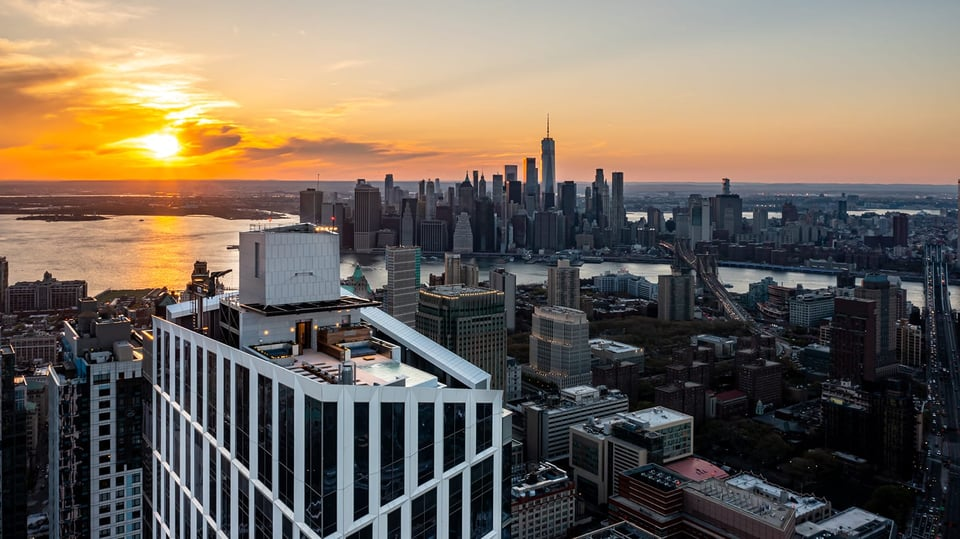

Your vision, clearly told.
Lincoln’s priorities would guide the positioning, the creative and the way Holland Park meets the market.

Hoboken · Rental development
Developer LCOR
Exclusive leasing & marketing partner
A major residential assignment at Hoboken Connect. SERHANT. announced its appointment to introduce the project to market, with a story centered on connectivity, sustainability and waterfront living.
Work in focusLeasing & marketing appointment announced in 2026.
SERHANT. appointment ↗ · LCOR project & program ↗
Planned project scale. Leasing results and a completed delivery are not claimed.
What we bring to LincolnTranslate a larger district vision into a clear reason to choose a home.

Hamilton Park · Jersey City
Developer EPIRE
Sales launch with Patrick Southern of SERHANT.
A local launch built around architecture, Italian craftsmanship and life beside Enos Jones Park. The published campaign pairs a detailed property feature with available residences and a broker-event invitation.
Work in focusSponsored launch feature + broker-event invitation.
SERHANT. listing & 75-home program ↗ · Published launch campaign ↗ · Developer project ↗
Launch feature presented by Patrick Southern, September 21, 2026. Its 30%-sold status is not attributed here to SERHANT.’s work.
What we bring to LincolnConnect the design story to a real visit and a conversation with the sales team.

Downtown Jersey City · 139 Columbus Drive
Developer Norkez
Marketed by Patrick Southern of SERHANT.
A launch story that makes the product easy to understand: condominium living, townhome choice, rooftop amenities and the Downtown setting. The published campaign included a broker and public-event invitation.
Work in focusLocal property feature + broker/public-event invitation.
SERHANT. program & developer ↗ · Published launch campaign ↗
Campaign published September 16, 2025. The event was advertised; attendance, sellout speed and total sales are not asserted.
What we bring to LincolnMake the home choices clear, then turn attention into a reason to visit.
Selected assignments. Project scale, historical sales and current appointments are labeled separately.

Downtown Brooklyn · City Point
Developer Extell Development Company
Extell Marketing Group & SERHANT. · Exclusive Sales Team
SERHANT.’s 2021 letter reports more than 100 units sold at Brooklyn Point and a nationally televised commercial produced for Extell, linked to the project. Sales storytelling brings the skyline, City Point and the amenity experience together.
Work in focusJoint sales team + nationally televised commercial.
Reported sales & production work ↗ · Joint sales-team credit ↗ · Architect & height ↗
Historical company-reported unit sales, not current availability, total building sellout or independently audited results.
What we bring to LincolnGive a large development an immediately recognizable story, supported by a sales experience.

Brooklyn Heights · Brooklyn Bridge Park
Developer RAL Companies & Oliver’s Realty Group
SERHANT. New Development · Sales & project marketing
Project films and a redesigned website are documented in SERHANT.’s 2021 letter. The developers later announced a 90%-plus sales milestone: a concrete example of a project story carried through content, presentation and sales.
Work in focusDevelopment films + website redesign + sales representation.
Film & website work ↗ · Developer program ↗ · Developer sales milestone ↗
The September 23, 2024 milestone is cumulative project status; it is not a claim that SERHANT. alone completed every sale.
What we bring to LincolnCarry the waterfront lifestyle story consistently from first impression to the sales conversation.

Manhattan · Upper West Side
Developer SJP Properties & Mitsui Fudosan America
SERHANT. New Development · Exclusive sales & marketing
An exclusive sales and marketing assignment with a recognizable architectural story. In a published interview, SERHANT.’s sales director described increased inquiries after the building’s appearance in Owning Manhattan.
Work in focusExclusive sales & marketing + documented media exposure.
Developer & 112-home program ↗ · Exclusive marketing credit ↗ · Sales-director interview ↗
Interview dated September 5, 2024. No numerical media uplift, attribution to a specific sale or future television placement is promised.
What we bring to LincolnPair a compelling introduction with a team ready to guide the next conversation.
Selected assignments. Project scale, historical sales and current appointments are labeled separately.

Lincoln’s published concept brings homes, public space and a proposed light rail connection into one story at the Jersey City–Hoboken edge. We see the makings of a place people could build their day around.
The city publishes a Jersey Avenue Light Rail Redevelopment Plan. We would like to review the latest applicable approvals, station arrangements and public-space program with Lincoln before using development capacity or delivery figures in marketing.
We would welcome Lincoln’s latest plans, phasing and station update. The rendering is a published concept, not a confirmation of final design.
Sources: Lincoln Equities’ Holland Park page · Parcel record. Our interpretation of the concept is a starting point for discussion.

A neighborhood film could begin with the small routines that make a place feel like home: a table outside, a morning walk, a reason to linger.

We could introduce the public realm through people and everyday moments, helping future residents imagine the life around their home.

As the transit plans are confirmed, we could turn connectivity into a clear resident story, with accurate routes and everyday journeys.
Illustrative storytelling based on published concept imagery. Retail, amenities, transit service and timing would be confirmed with Lincoln before marketing.
The surrounding lofts and residential communities give us a specific neighborhood to introduce.
Public space, hospitality and connection offer inviting themes to explore with Lincoln.
Our opportunity is to express Lincoln’s vision in a way that feels distinctive, welcoming and full of possibility.

Published project map · Conceptual context; walking radii and future connections are not independently verified.
Our interpretation for discussion. The research appendix includes six nearby properties, source-linked developer/owner context and dated published asking-rent examples.